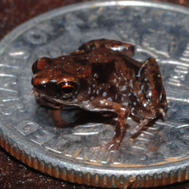
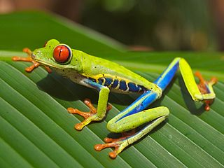
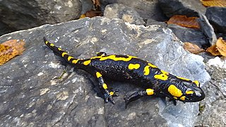
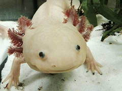

| Image | Amphibian | Attribution |
|---|---|---|
| |
kani bushfrog | Rison Thumboor - Wikimedia Commons - CC-BY-SA |
|  | paedophryne amauensis | Rittmeyer EN, Allison A, Gründler MC, Thompson DK, Austin CC - Wikimedia Commons - CC-BY |
|  | red eyed tree frog | Carey James Balboa - Wikimedia Commons - Public Domain |
|  | fire salamander | Cristo Vlahos - Wikimedia Commons - CC-BY |
|  | axolotl | th1098 - Wikimedia Commons - CC-BY-SA |